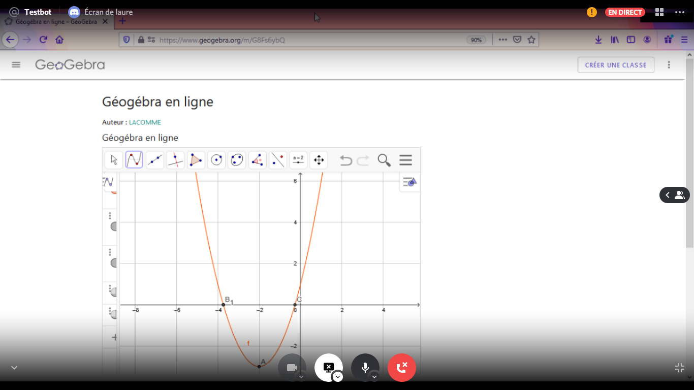
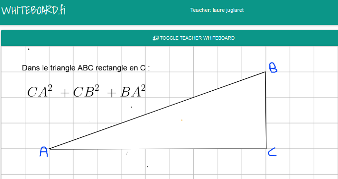
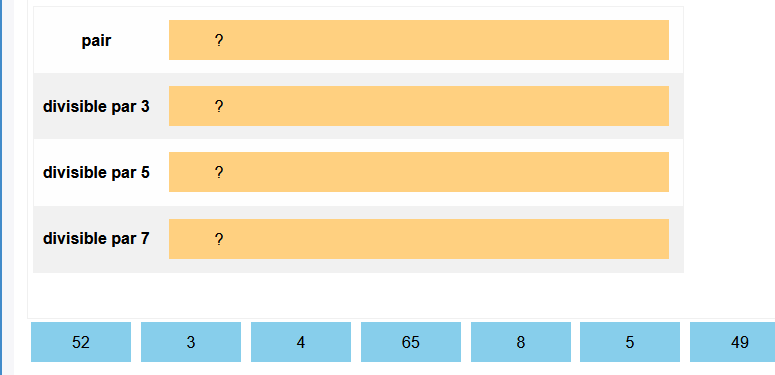
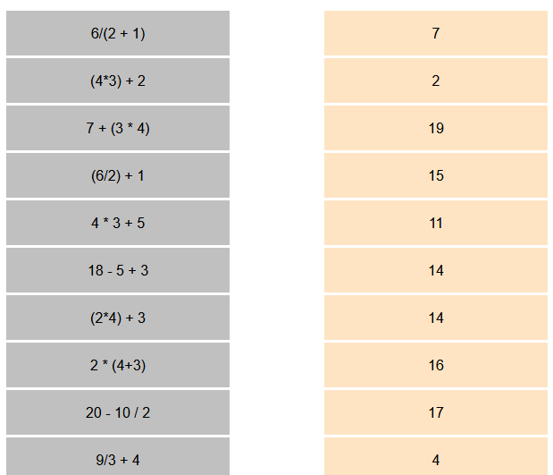

<!DOCTYPE html>
<html lang="en">

<head>
  <meta charset="utf-8" />
  <meta name="viewport" content="width=device-width, initial-scale=1.0, maximum-scale=1.0, user-scalable=no" />

  <title>Présentation</title>
  <link rel="stylesheet" href="css/reveal.css" />
  <link rel="stylesheet" href="css/theme/solarized.css" id="theme" />
  <link rel="stylesheet" href="css/highlight/zenburn.css" />
  <link rel="stylesheet" href="css/print/paper.css" type="text/css" media="print" />

</head>

<body>
  <div class="reveal">
    <div class="slides">
      <section style="text-align: left;" data-markdown>
        <script type="text/template">

<p text-align = "left"> Le contexte sanitaire nous amène à nous tourner vers l'enseignement numérique.</p>

<p text-align = "left">  Les outils concus dans ce but sont nombreux et faciles d'utilisation. 
</p>

</script>
      </section>
      <section>
        <section data-markdown> <script type="text/template">

## Une communication simple avec Discord
  
</script>

        </section>

        <section data-markdown> <script type = "text/template">
  ### Écran partagé 
        <div style="text-align: left;"> 
           L'élève peut suivre la progression du cours en direct
          </div>
    
  </script>
        </section>
        <section data-markdown>
          <script type = "text/template">
          ### Multi support
            <div style="text-align: left;"> 
              Sur discord, il est donc possible de :
              <div style="text-align: left;" class="fragment" data-fragment-index="1"><li>Partager son écran</div>
                <div style="text-align: left;" class="fragment" data-fragment-index="2"> Mais aussi</div>
              <div style="text-align: left;" class="fragment" data-fragment-index="3"><li>de démarrer une visio-conférence</div>
              <div style="text-align: left;" class="fragment" data-fragment-index="4"><li>S'écrire</div>
              <div style="text-align: left;" class="fragment" data-fragment-index="5"><li>Échanger des documents</div> 
              <div style="text-align: left;" class="fragment" data-fragment-index="6"><br>Le tout sans limite de temps</div>
            </div>
          </script>
          </section>
        </section>

      <section>
        <section data-markdown>
          <script type="text/template">  ## Des outils adaptés  </script>
        </section>

        <section data-markdown>
          <script type="text/template">
            ### Tableau Blanc Collaboratif
            

          </script>
        </section>

        <section data-markdown>
          <script type="text/template">
            ### Écrire des expressions mathématiques
            <video src="img/tabCollab.mp4" width="1200" height="350" controls></video>

            
          </script>
        </section>

        <section data-markdown>
          <script type="text/template">
            ### Exercices Interactifs
  <div  style="text-align: left">
    Lien <a href = "https://wims.univ-cotedazur.fr/wims/wims.cgi?session=9TD5D7DFF0.1&+lang=fr&+module=adm%2Fclass%2Fclasses&+type=authparticipant&+class=3603024&+subclass=yes">
      pour tester
    </a>
  </div>
    <div  style="text-align: left">  
       Avec <strong>testId</strong> comme identifiant, et <strong>testPassword</strong> comme mot de passe
    </div>

  <div>
  <figure style = "display : inline-block ; width : 50% ; text-align : left;font-size : 20px">
    <figcaption>Placer chaque nombre dans le bon emplacement</figcaption>
    
  </figure>
   
  <figure style = "display : inline-block ; width : 30% ;  text-align : left ; font-size : 20px">
    <figcaption>Associer chaque calcul à son résultat</figcaption>
    
  </figure>

</div>

  </script>
        </section>
        <section data-markdown>
          <script type="text/template">
            ### Salle de classe virtuelle
  <div style="text-align: left">
     L'élève propose une solution (écran de droite),j'observe ce qu'il fait (écran de gauche).
    Je corrige et lui fournis une solution.</div>
      <video src="img/demo1.mp4" width="1200" height="350" controls></video>
  </script>
        </section>
      </section>

        <section data-markdown>
          <script type="text/template">
            ### Un suivi rigoureux
  <div style="text-align: left">
  Les corrections sont éditées à l'aide de logiciels adapté aux mathématiques, puis publiées
  sur l'espace personnel de chaque élève.
  </div>
  </script>


      </section>
    </div>
  </div>


  <script src="js/reveal.js">
  </script>

  <script>

    function extend() {
      var target = {};
      for (var i = 0; i < arguments.length; i++) {
        var source = arguments[i];
        for (var key in source) {
          if (source.hasOwnProperty(key)) {
            target[key] = source[key];
          }
        }
      }
      return target;
    }

    // Optional libraries used to extend on reveal.js
    var deps = [
      { src: './plugin/markdown/marked.js', condition: function () { return !!document.querySelector('[data-markdown]'); } },
      { src: './plugin/markdown/markdown.js', condition: function () { return !!document.querySelector('[data-markdown]'); } },
      { src: './plugin/highlight/highlight.js', async: true, callback: function () { hljs.initHighlightingOnLoad(); } },
      { src: './plugin/zoom-js/zoom.js', async: true },
      { src: './plugin/notes/notes.js', async: true },
      { src: './plugin/math/math.js', async: true }
    ];

    // default options to init reveal.js
    var defaultOptions = {
      controls: true,
      progress: true,
      history: true,
      center: true,
      transition: 'default', // none/fade/slide/convex/concave/zoom
      dependencies: deps
    };

    // options from URL query string
    var queryOptions = Reveal.getQueryHash() || {};

    var options = extend(defaultOptions, {}, queryOptions);
  </script>

  <script>
    Reveal.initialize(options);
  </script>
</body>

</html>